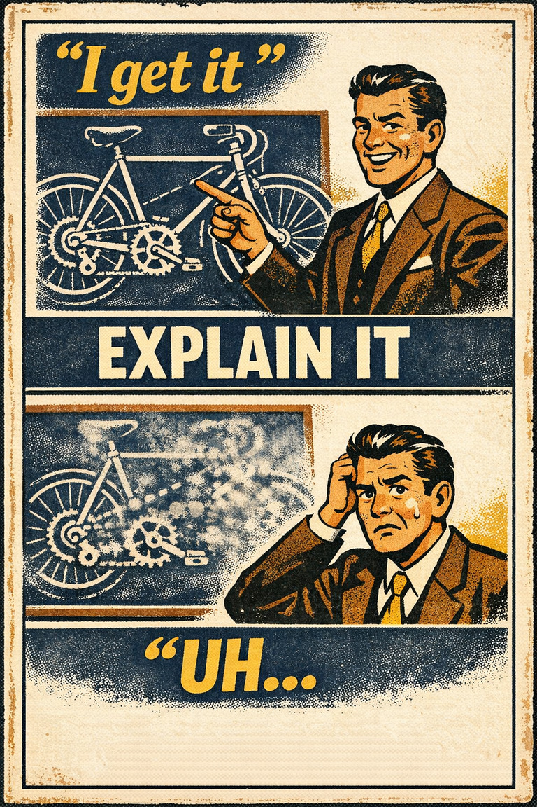

Common in early learning
77
Especially visible where jargon and surface familiarity arrive quickly.
Rare
Frequent

Cognitive Biases
A practical cognitive-bias site with clear definitions, learning paths, assessments, self-audits, and debiasing tools.
Cognitive Bias
The tendency for low skill or shallow understanding to produce overestimation of one's own competence, while higher-skill people may underestimate how unusual their competence really is.
What it distorts
It bends self-assessment, calibration, and judgments about who is ready, credible, or already understands enough.
Typical trigger
Early learning, thin feedback loops, public confidence displays, and domains where mistakes are not immediately corrected.
First countermove
Ask what task would genuinely test the claimed understanding rather than trusting confidence or recognition alone.
Best use
Structured process
What actual task would test this confidence instead of merely rewarding fluency?
When someone lacks the underlying skill, they often also lack the feedback sensitivity needed to recognize the gap. The same missing competence that harms performance can also distort self-evaluation.
These are classroom-facing editorial estimates for comparing how the bias behaves in use. They are teaching aids, not measured statistics.
Common in early learning
77
Especially visible where jargon and surface familiarity arrive quickly.
Easy to spot from outside
52
Others may notice the mismatch sooner than the learner does.
Easy to innocently commit
73
The slide from exposure to felt mastery is remarkably ordinary.
Teaching difficulty
52
Best taught through task-level tests rather than slogans about humility.
This comparison makes the hidden pull easier to see before the technical label has to do all the work.
Biased move
This is like mistaking your ability to recognize the moves in a chess game for your ability to play the game well.
Clearer comparison
Familiarity with the surface can arrive early. Calibration about competence usually arrives later and only after real error correction.
Do not use this as a general insult for confident people you think are wrong. The useful point is narrower: low competence can damage self-assessment because the same missing skill also weakens error detection.
Use this label when shallow understanding or low competence is making self-evaluation systematically too generous.
Use the quick check, caveat, and nearby confusions together. The fastest diagnosis is often the noisiest one.
Each example changes the surface context while keeping the same hidden distortion in place.
Someone watches a few videos on a topic and quickly starts speaking as though they could teach the subject, because the vocabulary now feels natural.
A new manager overestimates readiness to make a strategic call in a complex domain because early successes produced confidence faster than judgment.
Confident public commentary gets mistaken for competence because fluent explanation sounds like depth even when the model underneath is thin.
It often feels like you have already crossed from exposure into understanding just because the terms, moves, or explanations now sound familiar.
Teaching note: This page pairs well with illusion of explanatory depth because together they explain why people can sound informed long before they are well-calibrated.
The strongest debiasing moves change the process, not just the label.
Shift from 'I get it' to a concrete test of whether you can perform, explain, compare, or troubleshoot the thing in question.
Use demonstrations, peer review, or challenge questions instead of self-rated confidence alone.
Build environments where feedback arrives quickly enough to expose the difference between familiarity and competence.
Practice And Repair
The central move is not just being wrong. It is taking the feeling of familiarity as evidence that a deeper level of competence has already arrived.
A learner gains enough exposure to speak fluently before they have encountered enough correction to calibrate accurately.
Recognition and explanation feel so much easier than they used to that they start to look like mastery.
Self-assessment stays too high because the person lacks the error-detection habits that would reveal the gap.
Switch from self-rated understanding to a concrete demonstration, challenge question, or troubleshooting task.
What would count as real performance evidence here rather than evidence of familiarity alone?
Spot It
Slow It
Reframe It
These distinction guides slow down the most common nearby-label confusions before the diagnosis hardens.
Illusion of explanatory depth is overestimating how well you understand a mechanism; Dunning-Kruger is miscalibrated self-assessment when limited skill hides what is missing.
Quick rule: Ask whether the missing piece is mechanism explanation or broader competence calibration.
These are nearby labels that can share the same outer appearance while differing in what actually drives the distortion. Use the overlap, the distinction, and the diagnostic question together before settling the call.
Why compare it: Overconfidence is the broader tendency toward excessive certainty; the Dunning-Kruger effect is specifically about low competence distorting self-assessment.
Why compare it: The illusion of explanatory depth is about believing you understand a mechanism more deeply than you do; the Dunning-Kruger effect is about miscalibrating your own competence more generally.
Why compare it: Authority bias overweights other people's status; Dunning-Kruger concerns your own skill estimate and your ability to recognize its limits.
These are useful when the label seems roughly right but the process change still feels underspecified.
What task would actually falsify my claim to understand this?
Can I explain the mechanism cleanly without relying on jargon placeholders?
Where am I getting correction from people or environments that can really expose my errors?
These sourced cases do not prove what was in someone's head with perfect certainty. They are teaching cases for showing where the bias pressure becomes visible in practice.
The original humor, grammar, and logic studies
Lower-performing participants often overestimated their relative standing, while stronger performers were less aware of how unusual their competence was.
Why it fits: The skills needed for performance and self-evaluation were partly the same skills.
1999
Fast confidence in thin-feedback domains
Domains with weak correction loops let confidence outrun competence for longer stretches.
Why it fits: Without robust feedback, fluency keeps masquerading as understanding.
Modern discussion
These linked tools turn the page into practice instead of leaving it at the level of definition.
This bias appears directly in one guided sequence and also in nearby paths that frame the same judgment problem from a slightly wider angle.
Direct path
Use this path when someone sounds sure, fluent, or experienced and you need to know whether the underlying understanding is actually there.
Nearby path
Use this path before a major project, strategy choice, or resource commitment.
These audits combine direct and nearby checks so you can test the label itself and the broader judgment pattern around it.
Direct audit
Do I really understand this, or has fluency outrun competence?
Nearby audit
What would the outside view say before the inside story takes over?
These workshop packets mix direct coverage with nearby classroom material that makes the same distortion easier to teach.
Direct workshop
Confidence vs Understanding Classroom Kit
A lesson for showing how fluency, confidence, and real transferable understanding come apart.
Nearby workshop
A 45-minute lesson for separating vivid stories, repeated claims, and missing denominators before a news item becomes belief.
These scenarios mix direct and nearby cases so you can practice the label itself and the broader judgment pattern around it.
Direct scenario
The beginner who stopped too early
After one tutorial, a novice feels ready to teach the whole topic and dismisses feedback from more experienced classmates because the basics now seem simple.
Nearby scenario
The first number in the room
A product team sees one early retention number from a tiny pilot and keeps comparing every later forecast to that first number, even after much larger cohorts come in.
These links widen the frame around the bias without interrupting the core lesson on this page.
An article on how recognition and smooth explanation often get mistaken for depth long before the underlying competence is there.
CogBias theory
A guide to building instruction around calibration, comparison, and challenge rather than around confidence displays alone.
CogBias theory
These neighbors were selected from shared categories, shared patterns, and explicit editorial links where available.

The tendency to be more certain about judgments, forecasts, or abilities than the evidence warrants.

The tendency to believe you understand how something works more deeply than you actually do, especially until you are forced to explain the mechanism step by step.

The tendency to give excess weight to the opinion of a high-status or authoritative source independent of whether the source has earned that weight on the specific issue.

The tendency for better-informed people to underestimate how hard the issue looks to less-informed people.

The tendency for the first salient number, frame, or option to pull later estimates toward itself even when it is arbitrary or weakly relevant.

The tendency to underweight general prevalence information when vivid case-specific details are available.